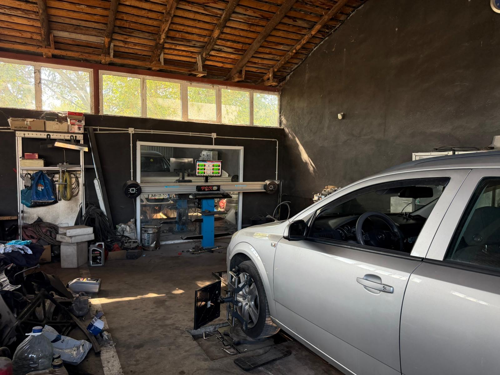
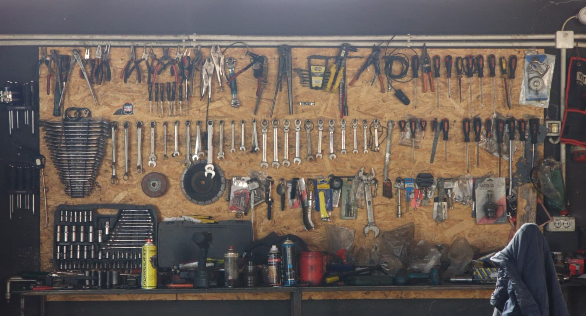
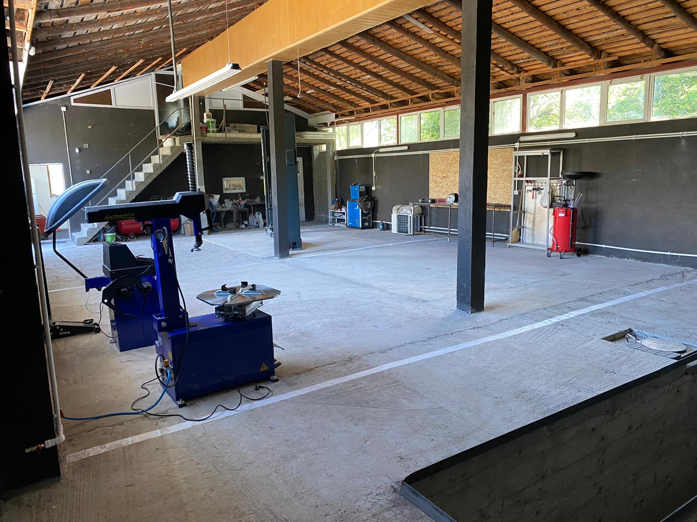
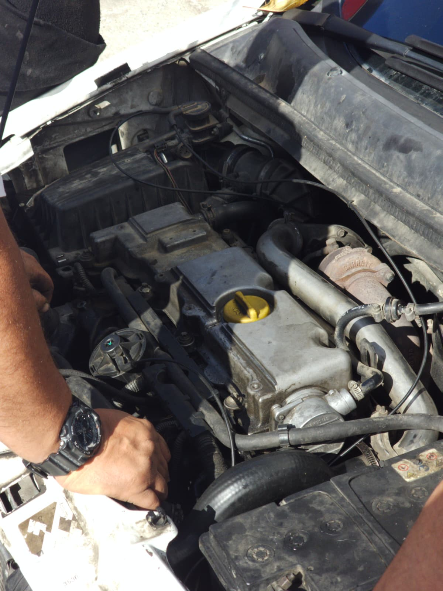
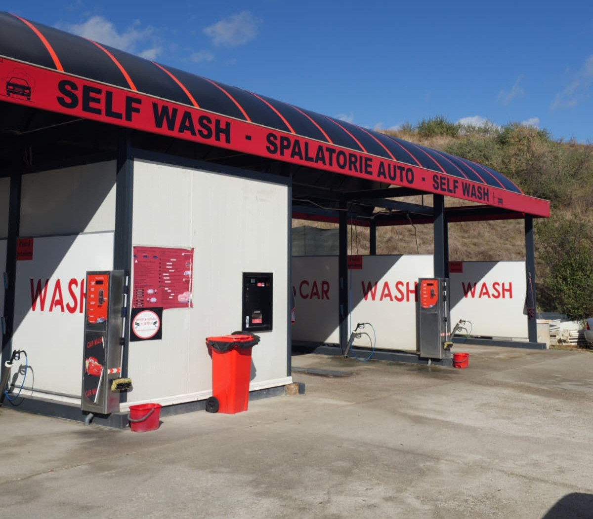
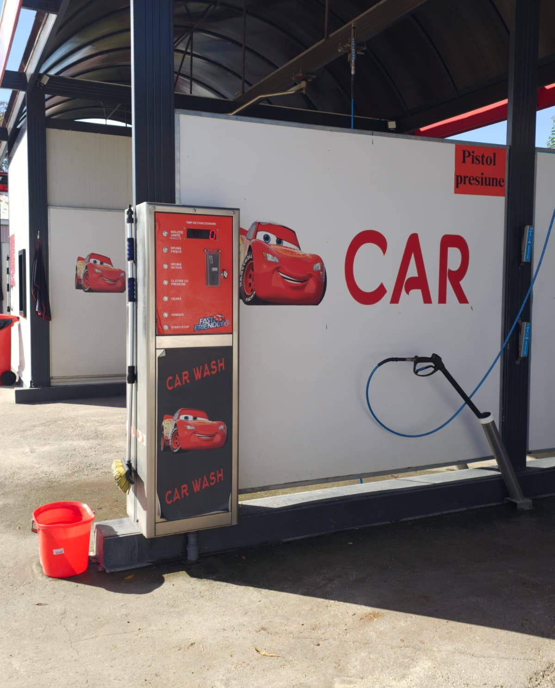
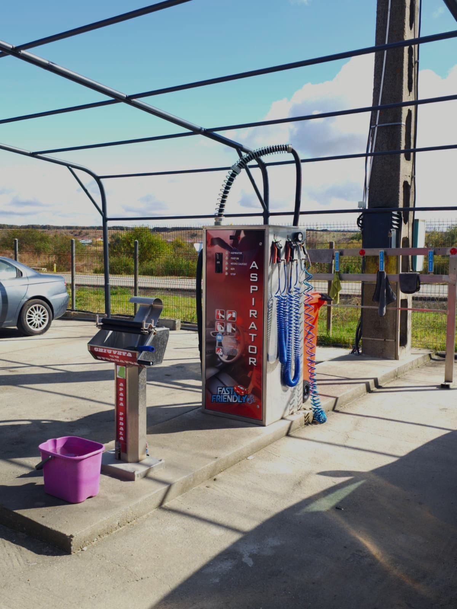

PLECI CU MAȘINA CA NOUĂ.
Mecanică, diagnoza, schimb ulei, vulcanizare, geometrie roti 3D, vopsitorie, spălătorie. Tot ce ai nevoie, direct in drumul tău.
↔ Trage mașina ca s-o rotești
Service auto
Tot ce are nevoie mașina ta
- 01✓
Piese auto
Te ajutăm să alegi piesele potrivite pentru mașina ta și le montăm chiar la noi.
- 02✓
Mecanică
Revizii, ulei și filtre, frâne, distribuție, suspensii și evacuare.
- 03✓
Diagnoză
Citim erorile și verificăm senzorii, ca să știi exact ce are mașina înainte de lucrare.
- 04✓
Vulcanizare
Montat și echilibrat anvelope, schimb sezonier și reparat pene.
- 05✓
Geometrie roți 3D
Reglăm unghiurile roților cu aparat 3D, pentru direcție precisă și anvelope uzate uniform.




Geometrie roți 3D
Vezi ce se întâmplă când roțile nu sunt drepte
Spălătorie auto
Speli când ai tu timp, nu când are programul
Spălătoria are 3 boxe, se află în curtea service-ului și funcționează zi și noapte, cu acces direct din DN65.
- Soluție jante
- Spumă fresh
- Spumă activă
- Clătire cu presiune
- Ceară
- Apă cu osmoză
Un jeton = 2,5 lei



Zona de detailing
Separat de boxele de spălare
O zonă pentru interior și finisaje, cu tot ce ai nevoie ca mașina să arate ca nouă.
- Aspirator pentru detailing, cu parfum
- Negru de cauciuc, pentru anvelope
- Aer comprimat
- Chiuvetă cu storcător
Despre noi
Povestea ZUZI SERV McQueen
Începutul
ZUZI SERV MCQUEEN a apărut pe 16 septembrie 2019 în Jitaru, ca un vis împlinit cu un scop simplu: service auto de încredere.
De ce „McQueen”
Ne plac mașinile, viteza și lucrul bine făcut. Așa a ieșit un loc unde repari și aranjezi mașina în aceeași curte.
Spălătorie non-stop
Am adăugat o spălătorie modernă, ca șoferii de pe drumul național s-o găsească deschisă oricând.
- 24/7
- Spălătorie
- 1
- Locație: service și spălătorie
- 7
- Ani de experiență
- DN65
- Acces direct la ieșirea din Jitaru
Contact
Vino la noi
- Adresă
- Str. Alexandru Ioan Cuza, Nr. 2, Sat Jitaru, Oraș Scornicești, Jud. Olt, 235605
- Telefon
- 0770 234 069
- Program
- Spălătorie autonon-stop
- Service autoL–V, 09:00–17:00